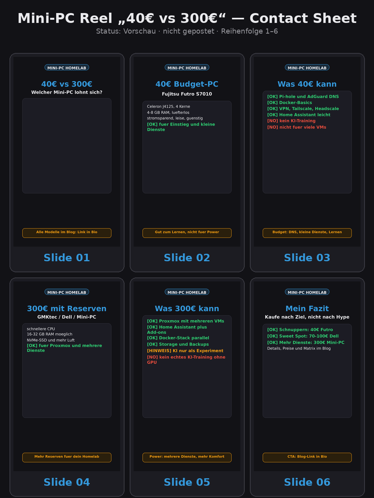
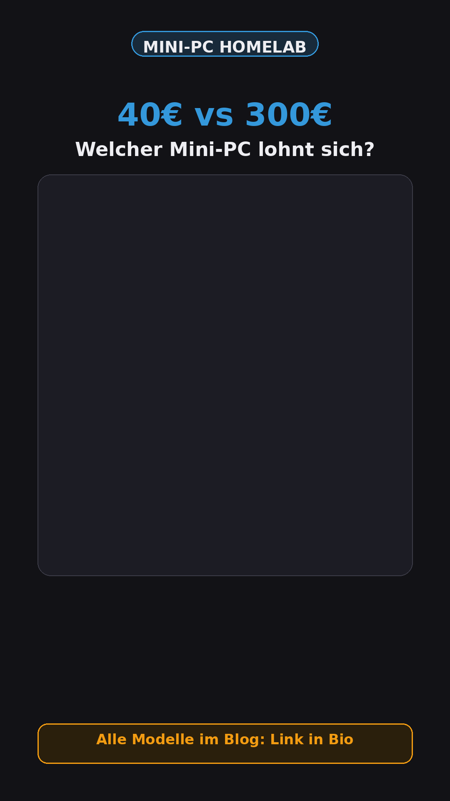
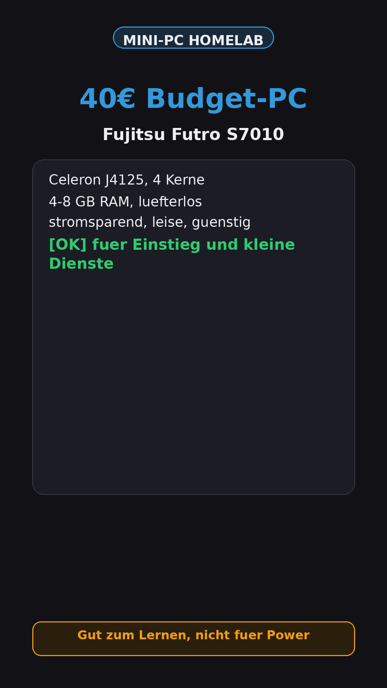
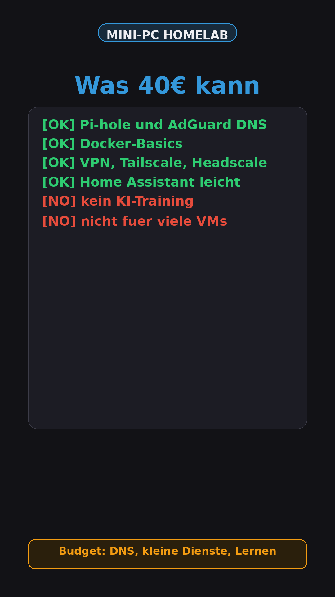
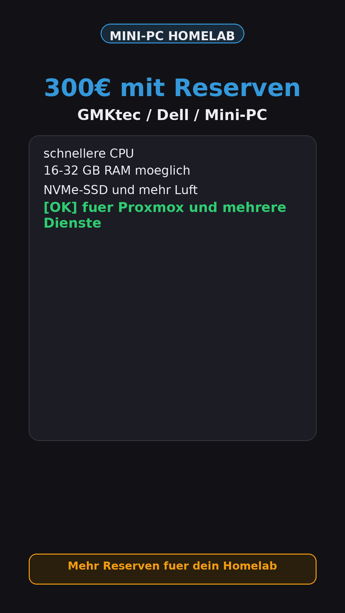
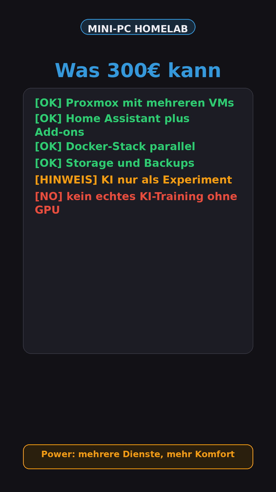
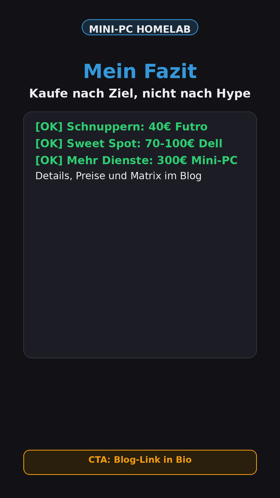

Mini-PC Reel „40€ vs 300€“
Kontaktbogen

Slides in Reihenfolge






Finale Caption
🔥 40€ vs 300€ – welcher Mini-PC lohnt sich wirklich für dein Homelab? Der Fujitsu Futro S7010 (40€) ist perfekt für Einsteiger: lüfterlos, stromsparend, ideal für Pi-hole, AdGuard und Docker-Basics. Aber für Proxmox mit mehreren VMs wird's eng. Der GMKtec G3S (300€) hat mehr Reserven: schnellere CPU, mehr RAM, NVMe. Hier laufen Proxmox-Cluster und Home Assistant inklusive Add-ons parallel. Mein persönlicher Favorit? Ein gebrauchter Dell OptiPlex 3070 für 70-100€ – beste Preis-Leistung für die meisten Einsteiger. 📖 Alle Modelle, Preise und die Entscheidungsmatrix findest du im Blog. 🔗 Link in Bio _Werbung/Affiliate: Bei Käufen über meine Links erhalte ich ggf. eine Provision. Für dich entstehen keine Mehrkosten._
Hashtags
#Homelab #MiniPC #Selbsthosten #Proxmox #Kaufberatung #HomelabEinsteiger #ThinClient #Server
Posting-Checkliste
| Check | Status |
|---|---|
| Matmaksa visuelle Freigabe | offen |
| Posting-Freigabe | offen |
| Öffentliche Preview | nicht erzeugt |
| Git Push / Deploy | nicht erfolgt |
| KI-Bildgenerator / fal.ai / Claude | nicht genutzt |
| Affiliate-Transparenz | Caption enthält Hinweis |
| Futro als KI-Empfehlung? | nein |
Posting-Container
Lokale Datei: posting-container.md